Detect and Address Application Memory Leak with IBM WebSphere Automation

Last updated: July 2022
Duration: 45 mins
Need support? Contact Yi Tang and Kevin Postreich
Introduction to WebSphere Automation
IBM WebSphere Automation (WSA) is focused on delivering value into existing WebSphere Application Server (WAS) environments, helping administrators reduce the cost, effort, and risk of addressing common vulnerabilities, automating tasks, and remediating capacity incidents.
It removes manual toil so that your team can spend more time innovating while minimizing the cost of extending the life and maximizing the ROI of your WebSphere investments.
In conversations with customers, the same three concerns come up repeatedly. Organizations need to keep their IT estate secure and compliant, resilient to disruption and running optimally while reducing costs and maximizing ROI.
WSA helps organizations gain visibility, operational efficiencies, and cost savings quickly by extending the life of WebSphere investments and giving teams time back to focus on unlocking new value and fixing the imbalance of pure maintenance versus innovation tasks.
-
WebSphere operators and administrators save time and embrace DevSecOps by implementing patches more efficiently on virtual and container environments to keep operations compliant and secure.
-
Enhance remediation capabilities with insights and recommendations to improve the speed and depth of understanding of outages and anomalies as they occur.
-
Augment the operational experience with access to simplified and consolidated information that enables teams to act.
With WSA, security, business efficiency and resiliency become standard. IBM can meet you wherever you are in your optimization and automation journeys to help you quickly deliver value and increase ROI, all while laying a solid automation foundation to support future growth.
IBM WSA is available as a stand-alone offering or as an addition to IBM Cloud Pak® for Watson AIOps. As part of IBM Automation platform, IBM WebSphere Automation includes containerized components and common software services on top of a common automation layer, to manage WebSphere’s incidents, hybrid applications, and cost with complete observability, governance, and compliance.
Deploy virtually anywhere through containers supported by Red Hat® OpenShift® software, on IBM Cloud®, on essentially any existing infrastructure on-premises, or through private and public clouds. Use only the capabilities you need with a fully modular approach that’s designed to be easy to consume.
One of the WSA capabilities is automating memory leak detection and analysis in order to speed time to corrective action. With WSA, operation teams no longer need to gather problem diagnostic information manually or analyze heap dumps. WSA handles that for you and provides an analysis report that can be shared with the application development team or app vendor.
Business Context
You are a WebSphere Administrator, part of a WebSphere Operations Team responsible for maintaining health of the WebSphere estate in the enterprise. A typical “as-is” process for maintaining health for WebSphere environments is depicted below.
Today (as-is):
-
Manually monitor the application memory usage and take actions when seeing the heap usage keeping increasing.
-
Manually capture heap dumps
-
Go through heap dumps and try to find the root cause of the memory leak.
Currently, this is a very manual, time-consuming process, and you'd like to automate this process to direct valuable time and resource elsewhere. This is where IBM WebSphere Automation will help!
You would like to have:
-
Management dashboard: Consolidated dashboard increases awareness and response time to the health of your WebSphere and Liberty servers
-
Automated problem investigation: Let WebSphere Automation track new health issue across your existing traditional WebSphere and Liberty environments, on virtual machines or containers.
-
Contextual notifications: Receive health bulletin notifications only when new health issue affect the environment you manage, reducing noise and interruptions to the WebSphere operations team.
-
Shared, live visibility to key stakeholders: WebSphere operators and development teams can see the real-time health posture of the WebSphere estate, accelerating action and minimizing the risk of miscommunication.
In this lab, you are going to use a traditional WebSphere Application Server and a Liberty Server registered with WSA and monitored by Instana to drive a memory leak investigation.
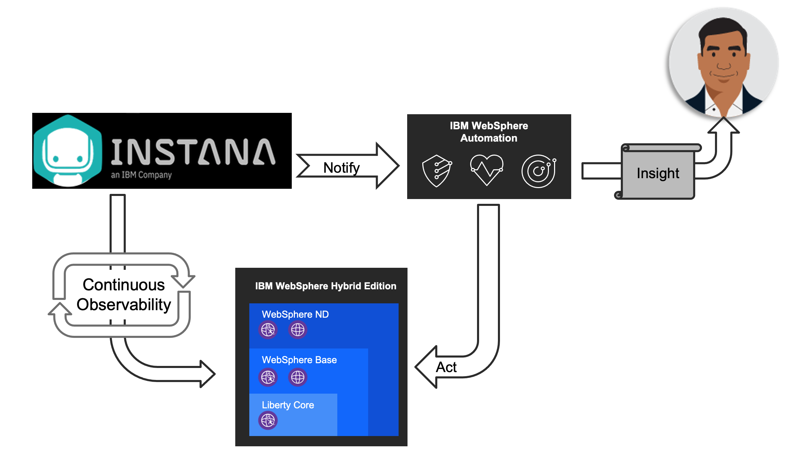
You are going to use a sample application and a script which is going to continuously add objects to the heap to create a memory leak event. Instana will detect such event and will initiate a communication with WSA to inform that a leak has been detected. Once that is done, WSA will open an investigation and begin gathering the necessary problem diagnostic information for that server. You can see the investigation is opened and the process which it goes through. These processes include:
-
Memory leak detected
-
Identifying server
-
Collecting heap dump
-
Analyzing heap dump
-
Investigation complete
In the end of the investigation, WSA provides an analysis summary which indicates the likely potential root cause of the memory leak. In this case it is a vector inside the sample application which is being hosted by the servlet wrapper. WSA also allow you to simply download all the files that you need with your application development team or application vendor so that they could take the action to fix the application.
At the end of this lab, you will learn how WSA can automatically:
-
detect memory leaks before they cause a crash
-
gather problem determination (PD) information while the leak is in progress
-
analyze the PD info and produce a report which can be exported and share with app development teams or app vendors
Accessing and starting the environment
If you are doing this lab as part of an instructor led workshop (virtual or face to face), an environment has already been provisioned for you. The instructor will provide the details for accessing the lab environment.
Otherwise, you will need to reserve an environment for the lab. You can obtain one here. Follow the on-screen instructions for the “Reserve now” option.
https://techzone.ibm.com/my/reservations/create/60da2c20e2cb7a001f656575
 |
TIP: If you need additional details, the step-by-step instructions for reserving an environment can be found in APPENDIX 1 of this lab guide. |
- When the demo environment is provisioned, use the provided username and password to access and start the environment. You should see the following screen:
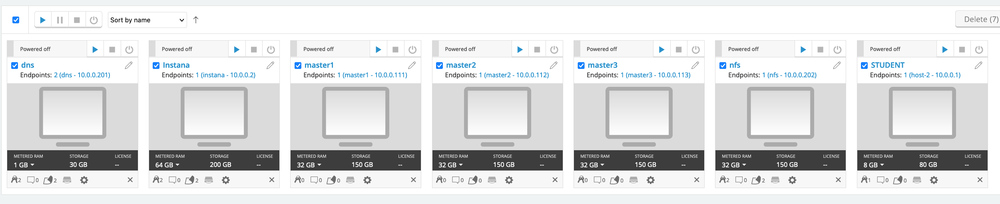
WebSphere Automation is pre-installed in the OCP cluster hosted on the VMs.
-
If the environment is NOT already started, go ahead, and Start the environment by clicking on the Play button. It takes about 10-15 minutes for the environment to start and stabilize.

You will be working on the STUDENT VM only.
All the WebSphere images required for the lab are pre-installed:
-
/opt/IBM/WebSphere/Liberty200012/
-
/opt/IBM/WebSphere/AppServer9056/
-
-
Click the screen representing the STUDENT VM

-
Once you log in to the Student VM you will see the Desktop, which contains all the programs that you will be using (browsers, terminal, etc.)
The login credentials for the STUDENT image is:
User ID: ibmuser
Password: engageibm!

-
You can resize the virtual desktop with the Fit to window button, located at the top of the Skytap environment window.

Part 1: Register WAS/Liberty Servers with WSA
To use the WSA for health check of WAS and Liberty servers, WAS and Liberty servers need to be registered with WSA first.
The detailed WSA registration process is can be find in Lab1 - Strengthen Operational Security with IBM WebSphere Automation documentation. However, in this lab, you are going to use a script to register the WAS server and the Liberty server with WSA.
-
Double-click Firefox icon to launch the web browser
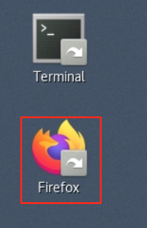
-
Click WebSphere Automation bookmark
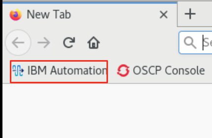
-
Click OpenShift authentication
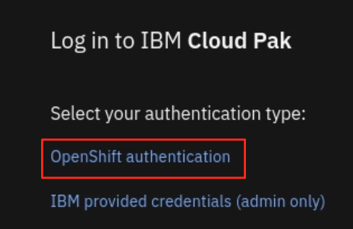
-
Click htpasswd.
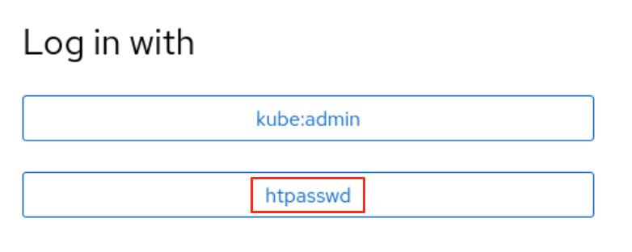
-
Enter Username and Password as: ibmadmin/engageibm and click Log in.
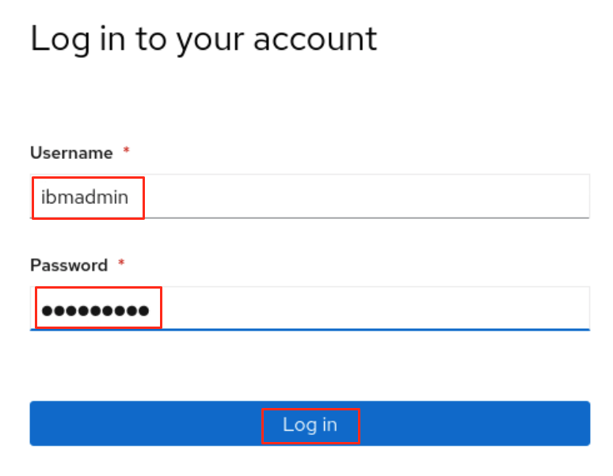
-
Click menu icon and select Application runtimes.
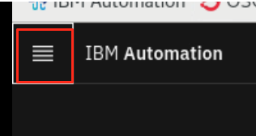
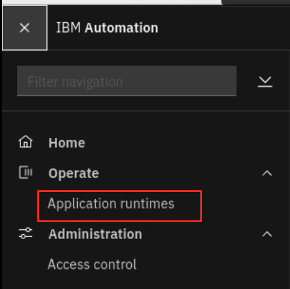
The WSA Security page is displayed, and the server registration list is empty.

-
Open a Terminal window, by clicking Applications > Terminal.
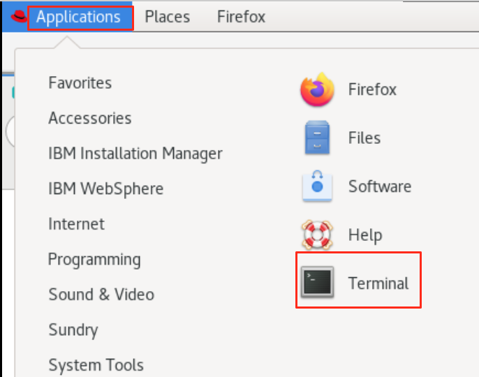
-
If you have not cloned the public repo named WAS-Automation-LabFiles to your lab environment before, now it is timer to do it, otherwise you can skip this step. In the Terminal window, clone the Git repository used for this lab with the following command:
cd /home/ibmuser git clone https://github.com/IBMTechSales/WAS-Automation-LabFiles.gitThese commands above clone the public repo named WAS-Automation-LabFiles to the local directory under /home/ibmuser/WAS-Automation-LabFiles directory.
-
Run the script named register_was_liberty in the WAS-Automation-LabFiles/ lab2-MemoryLeak directory to register WAS server and Liberty server to WSA.
chmod +x /home/ibmuser/WAS-Automation-LabFiles/lab2-MemoryLeak/*.sh /home/ibmuser/WAS-Automation-LabFiles/lab2-MemoryLeak/register_was_liberty.sh -
Once the script execution is completed, go back to the WSA page and you can see that the WAS server and Liberty server are registered with WSA.
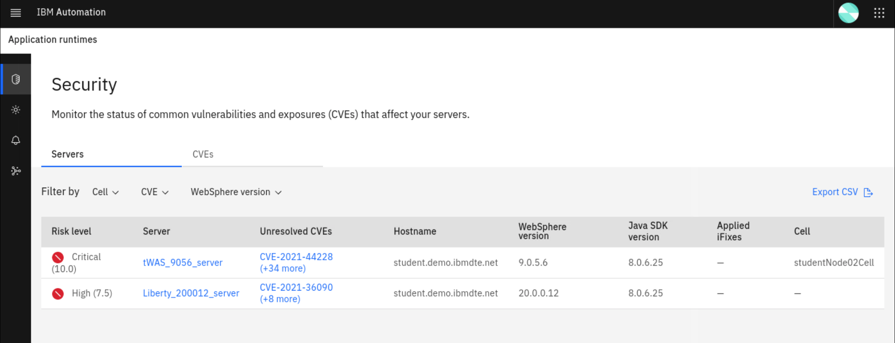
The WAS and Liberty registration is now completed.
-
Next, you need to configure an email to received notifications from WSA. The Email server configuration is pre-configured for this lab. You only need to add your personal email to receive WSA notifications.
a. Select the Notifications menu item from the navigation list and click on the Email addresses tab, to add your email address where WSA notifications will be delivered.
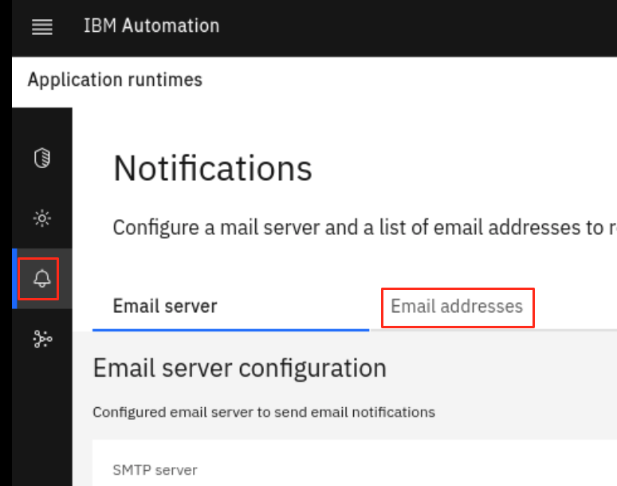
b. Click the Add button, enter your email address and click Save.

Great! Your email is configured to receive WSA notifications.
Part 2: Installing and starting Instana agent
In this section, you install an Instana agent to the STUDENT workstation and start it.
-
From the web browser, open a new window and click the Instana bookmark to access Instana page.
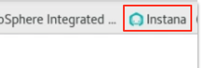
The login credentials are:
E-Mail: admin@instana.local
Password: qJgN6hS6sE
-
In the Installing Instana Agent page is displayed. Select Linux OS, Dynamic Agent mode, Eclipse OpenJ9 11 Agent runtime, and Interactive Installation mode and click Copy to copy the scrip for installing the Instana agent.
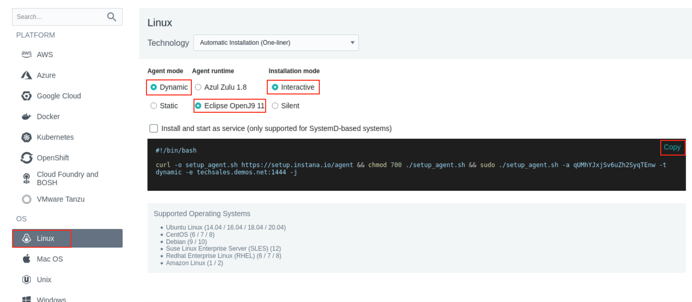
-
Go back to the Terminal window, right-click and select Paste to paste the Intana agent installation script.
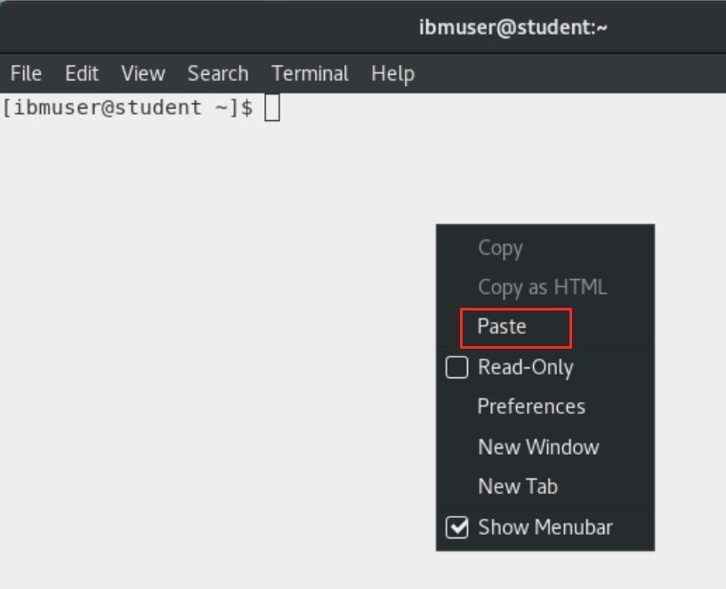
-
Press Enter, type the sudo password as: engageibm! and press Enter again to start the agent installation.
The output looks like this:
[ibmuser@student ~]$ #!/bin/bash
[ibmuser@student ~]$
[ibmuser@student ~]$ curl -o setup_agent.sh https://setup.instana.io/agent && chmod 700 ./setup_agent.sh && sudo ./setup_agent.sh -a qUMhYJxjSv6uZh2SyqTEnw -t dynamic -e techsales.demos.net:1444 -j
% Total % Received % Xferd Average Speed Time Time Time Current
Dload Upload Total Spent Left Speed
100 20470 100 20470 0 0 28156 0 --:--:-- --:--:-- --:--:-- 28156
[sudo] password for ibmuser:
Setting up the dynamic-j9 Instana agent for GNU/Linux
Are you sure? [y/N] y
Setting up Instana RPM repository
Updating YUM metadata
Installing Instana agent
warning: /var/cache/dnf/instana-agent-91ace26a4f2bcbd6/packages/instana-agent-dynamic-j9-20220307-0948.x86_64.rpm: Header V4 RSA/SHA256 Signature, key ID 9bad82de: NOKEY
Importing GPG key 0x9BAD82DE:
Userid : "stan@instana.com <stan@instana.com>"
Fingerprint: B878 152E 2F08 4D46 F878 FA20 BED2 D096 9BAD 82DE
From : https://packages.instana.io/Instana.gpg
Instana agent is installed in /opt/instana/agent directory.
-
Define Instana Infrastructure Zone
a. Open the Instana agent configuration file for editing with the command:
sudo gedit /opt/instana/agent/etc/instana/configuration.yamlb. Change the Hardware & Zone section as the follows
# Hardware & Zone com.instana.plugin.generic.hardware: enabled: true # disabled by default availability-zone: 'WebSphere'After the changes are made, your file contents should look this
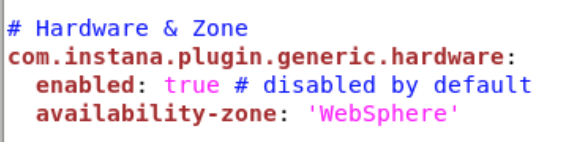
-
Click Save to save the changes, then click Close to close the editor.
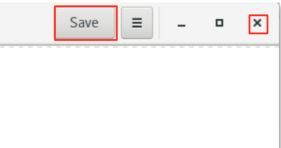
-
Start Instana agent with the command:
sudo systemctl start instana-agent.service Note: If prompted, enter the sudo password as: engageibm!
Instana agent is now started.
-
Verify the Instana agent installation
Note: after the agent is started, it might take a few minutes for the agent to sync with Instana server.
a. Go back to the Instana page in web browser, scroll to the bottom of the page and click Go to Instana! to navigate to Instana administrative console page.
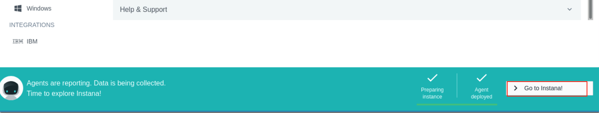
b. In the Instana administrative console page, click the Infrastructure icon.
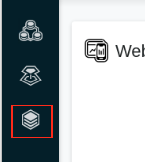
c. Click Time Rage dropdown button, select Last 5 minutes and click Live.
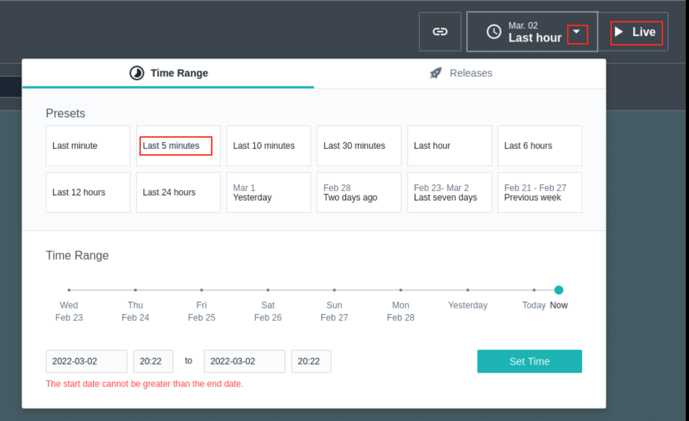
After a few minutes, you see that the infrastructure zone you defined is displayed.
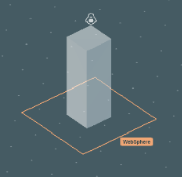
The Istana agent is now set to monitor the changes in 5 minutes interval, the agent installation is now completed.
Part 3: Configure WebSphere Automation integration with Instana and WebSphere/Liberty Servers
WSA is communicating with Instana to receive real-time Instana alerts. WSA also to access the VMs where registered WebSphere and Liberty servers are hosted to collect problem diagnostic information. The following steps walk you through the integration process.
-
Import the WSA certificate into Instana
In this part, you create a keystore with the WSA certificate and add it to Instana. This is done by using any current keystore (in the lab you are using the cacerts keystore), import the WSA certificate, then copy the keystore to the Instana server and add the keystore to the Instana configuration.
a. From the Terminal, make copy a current cacerts with the command:
cp /opt/instana/agent/jvm/lib/security/cacerts .b. Retrieve WebSphere Automation certificate with the command:
echo | openssl s_client -showcerts -servername cpd-websphere-automation.apps.demo.ibmdte.net -connect cpd-websphere-automation.apps.demo.ibmdte.net:443 2>/dev/null | openssl x509 -inform pem > cpd.pemc. Import the certificate to the keystore file with the command:
keytool -importcert -file cpd.pem -alias ibm.com -keystore cacerts -storepass changeit -nopromptThe output is showing like this:
[ibmuser@student ~]$ keytool -importcert -file cpd.pem -alias ibm.com -keystore cacerts -storepass changeit -noprompt
Certificate was added to keystore
d. Verify that the certificate has been imported
keytool -list -alias ibm.com -keystore cacerts -storepass changeitThe output is showing like this:
[ibmuser@student ~]$ keytool -list -alias ibm.com -keystore cacerts -storepass changeit
ibm.com, Mar 9, 2022, trustedCertEntry,
Certificate fingerprint (SHA1): AD:D6:9A:48:75:C8:99:5A:3F:67:8F:FA:92:7A:42:64:6B:DC:B8:6F
-
Copy the keystore file to Instana server
scp cacerts ibmadmin@instana:cacertsWhen prompted, type yes and enter the ibmadmin user password as: passw0rd
[ibmuser@student ~]$ scp cacerts ibmadmin@instana:cacerts
The authenticity of host 'instana (10.0.0.2)' can't be established.
ECDSA key fingerprint is SHA256:2iiLhGeEpq7CO7VZxNezQp2jCabOWIBXWD+aevSHwYI.
Are you sure you want to continue connecting (yes/no/[fingerprint])? yes
Warning: Permanently added 'instana,10.0.0.2' (ECDSA) to the list of known hosts.
ibmadmin@instana's password:
cacerts 100% 150KB 18.2MB/s 00:00
a. Access Instana server to adjust Instana settings to use the keystore certificate.
ssh ibmadmin@instanaWhen prompted, type yes and enter the ibmadmin user password as: passw0rd
b. Edit the settings.hcl file.
sudo vi settings.hclWhen prompted, enter the ibmadmin user password as: passw0rd
c. Add the line custom_keystore="/home/ibmadmin/cacerts" to the beginning of the file and save the change.
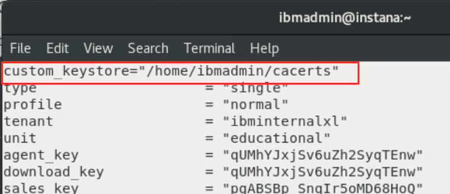
d. Update Instana with the command.
sudo instana update -f /home/ibmadmin/settings.hclThis will restart the Instana server and it will take a few minutes.
[ibmadmin@instana ~]$ sudo instana update -f /home/ibmadmin/settings.hcl
Setup host environment ✓
Handle certificates ✓
Ensure images ✓
Clean docker containers ✓
Check data directories ✓
Create configurations ✓
Migrate data stores ✓
Run components ✓
Check components ✓
Setup environment urls ✓
Run nginx ✓
Welcome to the World of Automatic Infrastructure and Application Monitoring
e. When the Instana server is updated, verify that the custom keystore has been enabled and end the ssh session
cat /var/log/instana/console.log | grep Keystore exit[ibmadmin@instana ~]$ cat /var/log/instana/console.log | grep Keystore
2022-03-07T10:09:41.269 INFO ▶ Custom Keystore is enabled: /home/ibmadmin/cacerts
….
[ibmadmin@instana ~]$ exit
logout
Connection to instana closed.
-
Create a SSH key on the OCP node and copy it over to all WAS instances
In order for WebSphere Automation to be able to collect data for you WAS instances, you need to create a SSH key for their communications.
Note: To save time, this task is already completed for you in this lab environment, so you do not need to do anything in this task. All the task steps used in the lab environment are listed below for your reference only.
a. Access the WebSphere Automation server to create a new SSH key.
ssh root@dnsWhen prompted, type yes and enter the root user password as: passw0rd
b. Issue command to create a new SSH key with passphrase. In the lab the passphrase used is: passw0rd
ssh-keygen -f ~/.ssh/wsa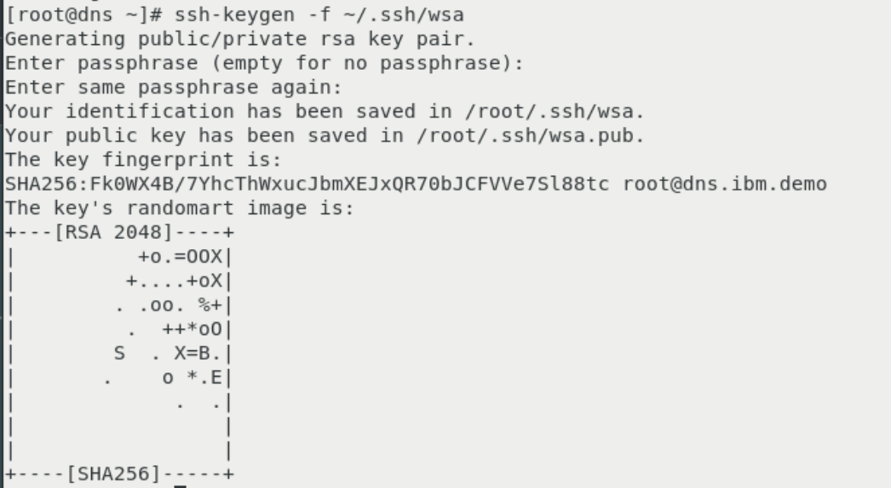
c. Copy the key over to the WAS server to be monitored. In this lab the following command is used:
ssh-copy-id -i ~/.ssh/wsa ibmuser@student.demo.ibmdte.netWhen prompted, type yes and enter the ibmuser user password as: engageibm!
d. Test the login to the WAS server from the WebSphere Automation server via ssh key with the key passphrase.
ssh -i ~/.ssh/wsa ibmuser@student.demo.ibmdte.net exite. Setting up WebSphere Automation for SSH to Linux or UNIX servers
KUBECONFIG=/root/install/auth/kubeconfig oc project websphere-automation oc create secret generic wsa-ansible \ --from-literal=ansible_user=ibmuser \ --from-literal=ansible_port=22 \ --from-file=ssh_private_key_file=/root/.ssh/wsa \ --from-literal=ssh_private_key_password=passw0rd ssh-keyscan student.demo.ibmdte.net >> /root/wsa_known_hosts oc create configmap wsa-ansible-known-hosts --from-file=known_hosts=/root/wsa_known_hostsf. Test connection
MANAGER_POD=$(oc get pod -l app.kubernetes.io/component=runbook-manager -o name | head -n 1) oc rsh $MANAGER_POD runcli testConnection student linuxThe output is looking like:
[root@dns ~]# oc rsh $MANAGER_POD runcli testConnection student linux
Mar 09, 2022 6:46:06 PM com.ibm.ws.automation.core.runbook.manager.RunbookManagerCLI clientMode
INFO: starting
Created job: test-connection-1646851568775
To see the job logs run: oc logs --tail=100 -l job-name=test-connection-1646851568775
g. Exit the ssh session using the following command.
exit
Part 4: Configure Instana for memory leak alert
This section describes the steps to configure Instana for the memory leak alert to be used by WSA. The actives include creating a custom payload, an alert channel, a custom event and an alert, which are done using Instana administrative console.
-
Create a custom payload.
You can create a custom payload by using the Instana administrative console or using the Instana API, in the lab, you are using the Instana administrative console.
a. From the Instana page, go to Settings > Team Settings page, under Events & Alerts. Then click Custom Payload.
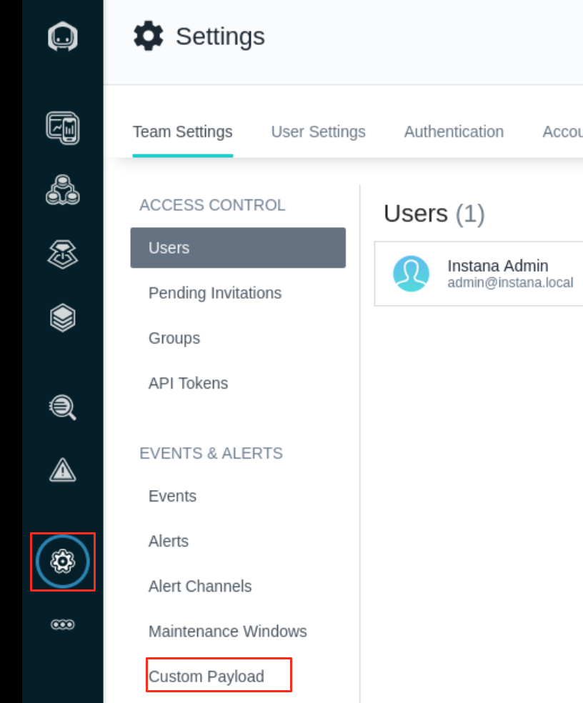
b. In the Key field, type PID, do not use any other value for the key. Set the Value type to Dynamic. In the Value field, click Select Tag and select Internal - Process ID, then click Save.
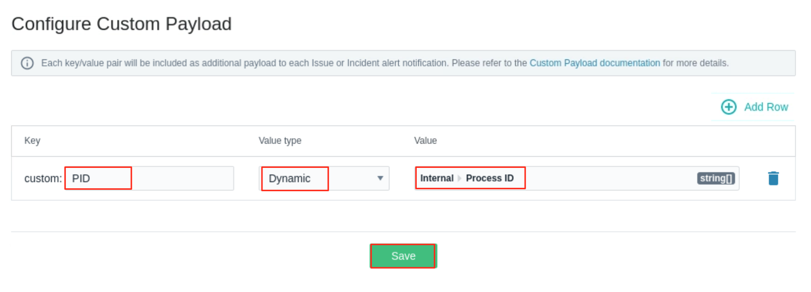
-
Gather the WSA information required to set up the Alert Channel.
a. From the Terminal window, run the following oc commands to get the Webhook URL for WebSphere Automation installation.
oc login --username=ibmadmin --password=engageibm --insecure-skip-tls-verify=true --server=https://api.demo.ibmdte.net:6443 oc project websphere-automation oc get route cpd -o jsonpath=https://{.spec.host}/websphereauto/health/webhooks/instana/memleakYour outputs look like this
[ibmuser@student ~]$ oc login --username=ibmadmin --password=engageibm --insecure-skip-tls-verify=true --server=https://api.demo.ibmdte.net:6443
Login successful.
You have access to 66 projects, the list has been suppressed. You can list all projects with 'oc projects'
Using project "websphere-automation".
[ibmuser@student ~]$ oc project websphere-automation
Already on project "websphere-automation" on server "https://api.demo.ibmdte.net:6443".
[ibmuser@student ~]$ oc get route cpd -o jsonpath=https://{.spec.host}/websphereauto/health/webhooks/instana/memleak
https://cpd-websphere-automation.apps.demo.ibmdte.net/websphereauto/health/webhooks/instana/memleak
The WebSphere Automation Webhook URL is: https://cpd-websphere-automation.apps.demo.ibmdte.net/websphereauto/health/webhooks/instana/memleak, you will use it later.
b. Run the following oc command to get the token for WebSphere Automation installation.
oc serviceaccounts get-token wsa-health-webhooks-apis-saThe output is shown below, you will use the token value later.
[ibmuser@student ~]$ oc serviceaccounts get-token wsa-health-webhooks-apis-sa
eyJhbGciOiJSUzI1NiIsImtpZCI6InJ1YTJ4VU1JdnRkemdlcFM1M0habGtTcXVuM1hlZlBrY19UUl82QWRWc0kifQ.eyJpc3MiOiJrdWJlcm5ldGVzL3NlcnZpY2VhY2NvdW50Iiwia3ViZXJuZXRlcy5pby9zZXJ2aWNlYWNjb3VudC9uYW1lc3BhY2UiOiJ3ZWJzcGhlcmUtYXV0b21hdGlvbiIsImt1YmVybmV0ZXMuaW8vc2VydmljZWFjY291bnQvc2VjcmV0Lm5hbWUiOiJ3c2EtaGVhbHRoLXdlYmhvb2tzLWFwaXMtc2EtdG9rZW4tc3R3bW4iLCJrdWJlcm5ldGVzLmlvL3NlcnZpY2VhY2NvdW50L3NlcnZpY2UtYWNjb3VudC5uYW1lIjoid3NhLWhlYWx0aC13ZWJob29rcy1hcGlzLXNhIiwia3ViZXJuZXRlcy5pby9zZXJ2aWNlYWNjb3VudC9zZXJ2aWNlLWFjY291bnQudWlkIjoiMzcxNjBjZmYtMTUwNy00MWYyLWFlODgtYjg5MjcxZjJlNzlmIiwic3ViIjoic3lzdGVtOnNlcnZpY2VhY2NvdW50OndlYnNwaGVyZS1hdXRvbWF0aW9uOndzYS1oZWFsdGgtd2ViaG9va3MtYXBpcy1zYSJ9.TVQfRO6E2ZTa4BBSvVgiv-74gbhEG-BVOBu0WaUFG_FBRJsplT6qr_trcsrvyNL9BVrF3kGd4oCqCos8HQGoIO0wEt7DsyePEbIRwL_vn8Jyr_qBr7cHrbWhu4y6EMWCObDWQdZRUsJqtgSLxtTzYqSf6upo_uQczjD5waWLX3gZbeeh5GcyNctFaQPpp_neM6HY-gZJxCSm8o7XmNB1Zcxg-F6ehhdf-0uXDXGYuBKsouWpBatERwBoVL3JgWQTPDUeIJApH9EOlO9LDieb8gaJDbWVB4b1ZsIWdlJg_F5pbWbapRuM8aAlf0HOxCaV84zTifK7J5R2NBf9xxeqrCqMpeSxfR5_Heh9WIl1lviKVn3qeS6aktj6duyu_5lpHw6RQjArcUk5NCxfe7hGS64BaISEbNdfrcYTNqEKeiNmydEuX7PpJaJxHBkmYYbWnZ0BrMaqQ1kUlTcvACs5FsNmbBQ3MOt3hin8dDqC9A1mFA_KlD1Oa1suhuY0DB_8tGwhKsIxFxY9pbKXhmqRl__7oueFxuFxxfvPWanL0WzRsoTJShyhcO6K3oyZPJWC4Cr2I42qo_g_Lth7gBIYRdzFJ63xpNgGUDStTXXcMkfMnm8v-lo5qzsezdgYBb6l152zcS6dA7Ld3502zIpnMx6ZGQadDL8uOSZbK-2CRU0
-
Create an alert channel.
To create an alert channel by using the Instana administrative console,
a. On the Team Settings page, under Events & Alerts, click Alert Channels.
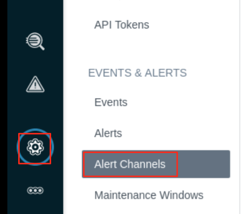
b. Click Add Alert Channel and select Generic Webhook.
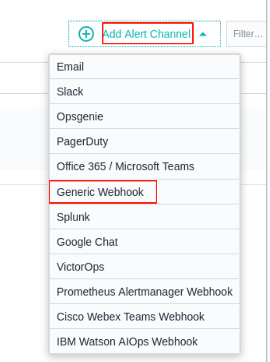
c. On the Create Generic Webhook Alert Channel page, enter a name of your choice in the Name field, in this lab the name is:
WebSphere Automation Healing Webhookd. Enter the Webhook URL you have for WebSphere Automation installation.
https://cpd-websphere-automation.apps.demo.ibmdte.net/websphereauto/health/webhooks/instana/memleak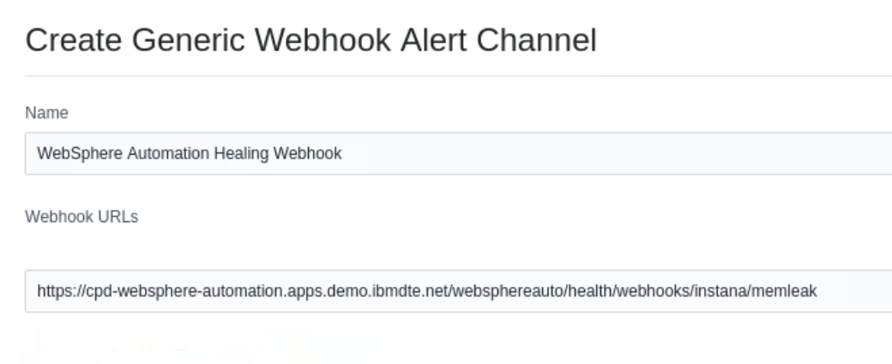
e. Under Custom HTTP Request Headers, click Add Header.
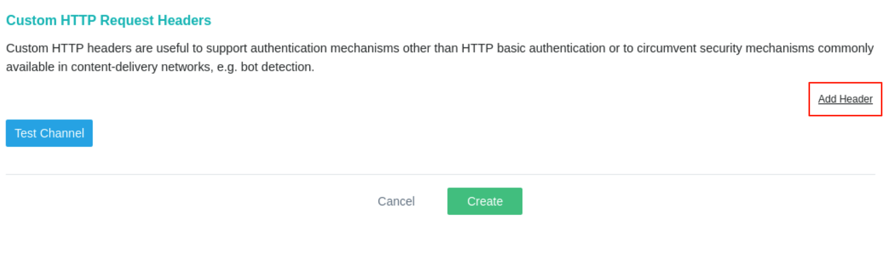
f. Create the following two request headers and then click Test Channel.
Key
Value Content-Type application/json Authorization Token value you get with the oc command in previous step 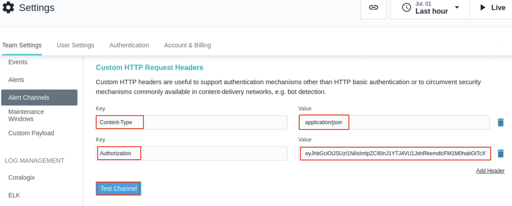
You should see the message showing the channel was successfully triggered.
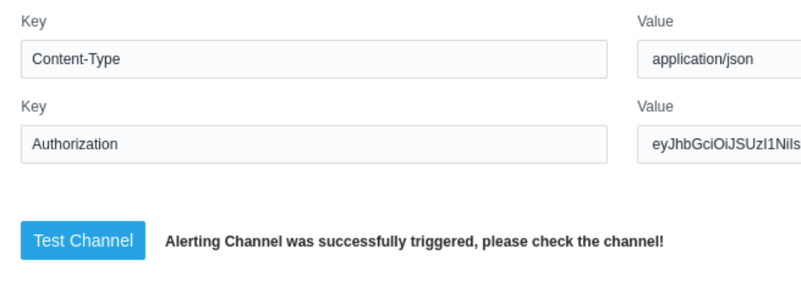
-
After verifying the channel, click Create to create it.
The alert channel is created.
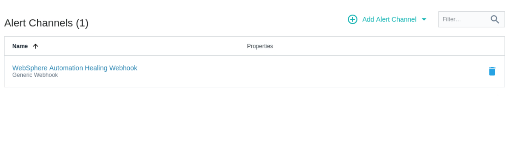
-
Create a custom event
To create a customer event by using the Instana administrative console:
a. On the Team Settings page, under Events & Alerts, click Events, then click New Event.
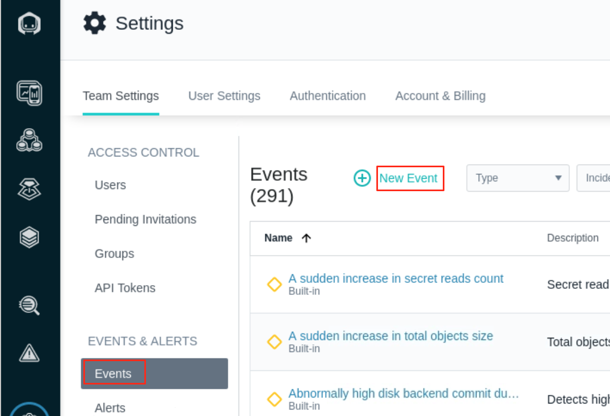
b. Create a custom “Memory Usage High” event and set its parameters as shown in the screenshot below and click Create:

-
Create an alert.
To create an alert by using the Instana administrative console,
a. On the Team Settings page, under Events & Alerts, click Alerts, then click New Alert.
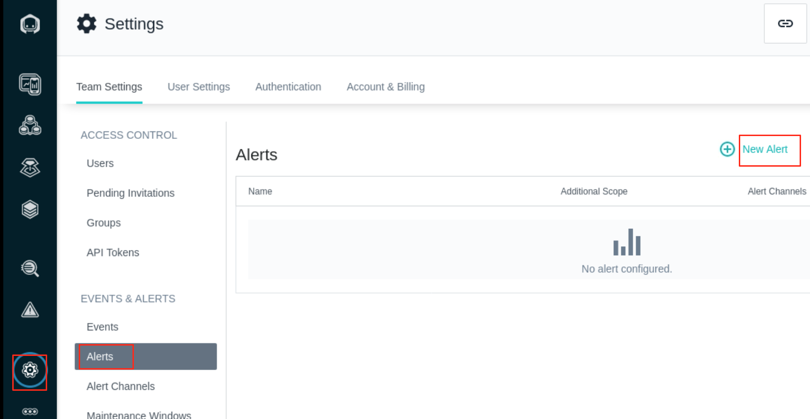
b. In the Name field, type a name for the alert as: WebSphere Automation Healing Memory Leak.
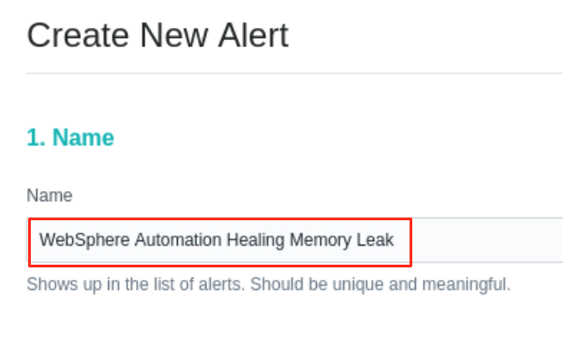
c. In the Events menu, select Alert on Event(s).
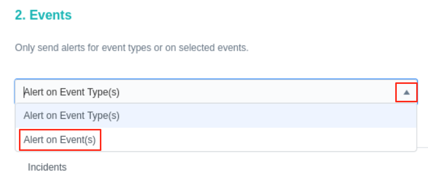
d. In the Events section, click Add Event.
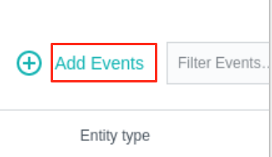
e. In the Add Events window, enter memory usage h in the search box and select Memory Usage High. You can filter the list by using a keyword (for example, leak) to help find the entry in the list.
Click Add 1 Event.
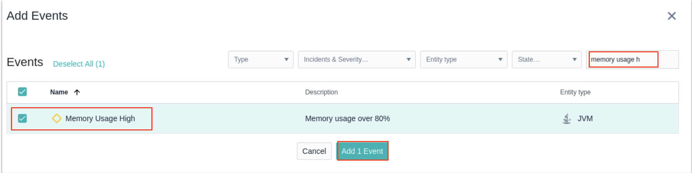
f. Add two more events: Garbage collection activity high (for JVM) and Memory leak (for JVM).
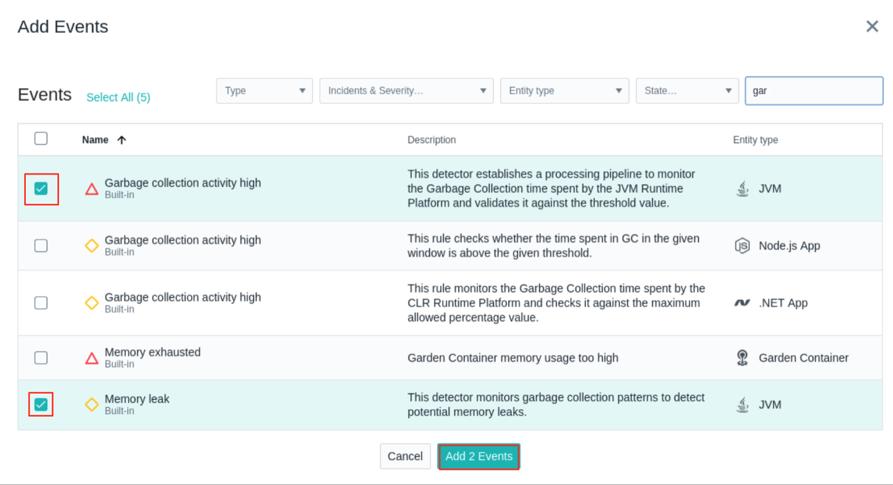
The event list updated:
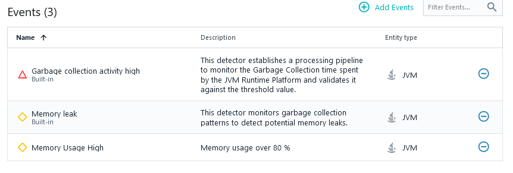
g. In the Scope menu, select All available entities.
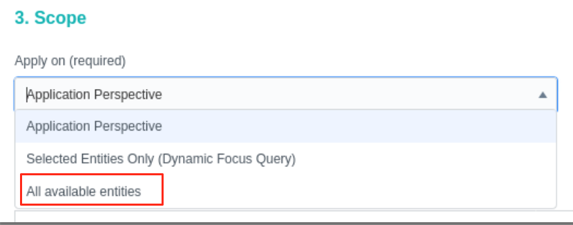
h. Under Alerting, click Add Alert Channel, select the alert channel that you created previously. Then click Add 1 Channel.
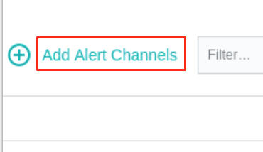

i. Click Create.
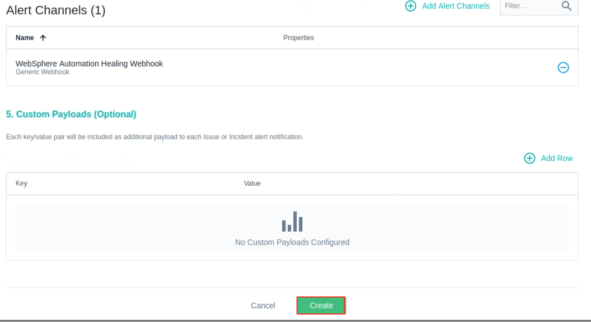
The alert is created.
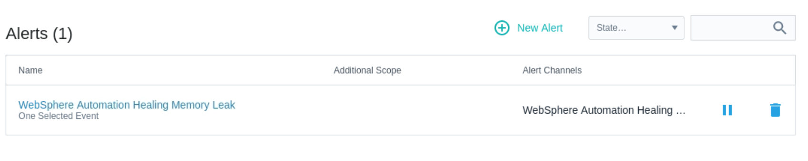
Now the Instana configuration for memory leak alert is completed
Part 5: WebSphere memory leak check with WebSphere Automation
In this section, you run a script to create memory leak incident for an application running in a WebSphere Application server instance which is already registered in WebSphere Automation. When WebSphere Automation detects the memory leak, it automatically conducts the analysis to identify the root cause.
-
Start the WebSphere application server. From the Terminal window, run the command below to start the WebSphere application server:
/opt/IBM/WebSphere/AppServer9056/bin/startServer.sh tWAS_9056_server -
Go back to WSA page in web browser and click Health icon.
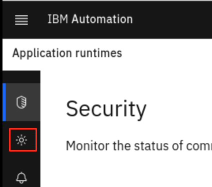
Since all the application are working fine at this time, you do not see anything in the Health page yet.

-
In this lab, you can also monitor the WebSphere application server memory change in Instana.
a. In Instana page, click Infrastructure icon, click Comparison Table, select JVMs from the dropdown, and click bootstrap WAS90.SERV1.
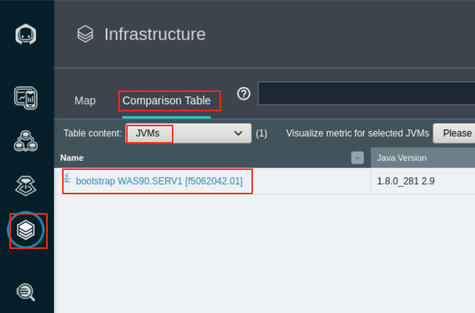
As you can see, currently there is not any issue with the WAS server.
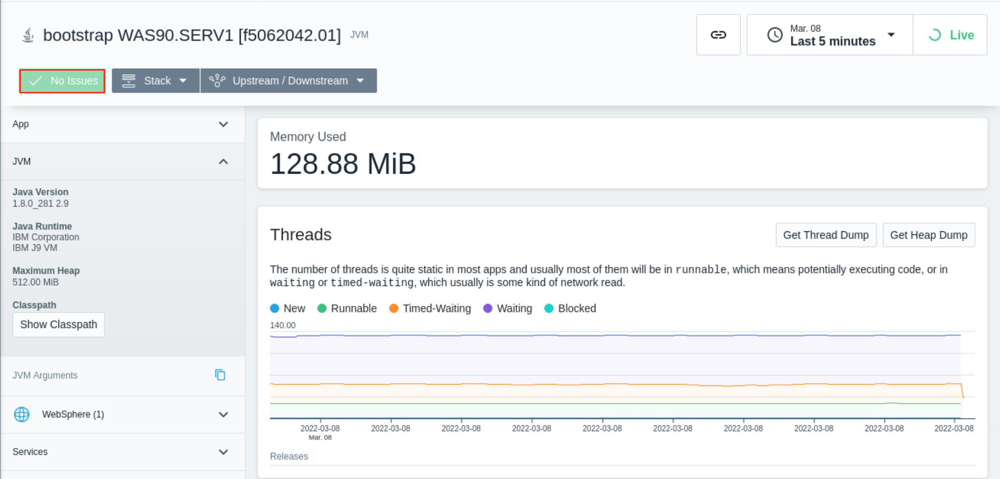
-
From the Terminal window, run the script to increase application heap usage which will create application memory leak event.
/home/ibmuser/WAS-Automation-LabFiles/lab2-MemoryLeak/curl_MLApp_add_was.shThe script output is showing like this:
[ibmuser@student ~]$ /home/ibmuser/WAS-Automation-LabFiles/lab2-MemoryLeak/curl_MLApp_add_was.sh
Increased heap usage by 25MB
Increased heap usage by 50MB
Increased heap usage by 75MB
Increased heap usage by 100MB
Increased heap usage by 125MB
Increased heap usage by 150MB
Increased heap usage by 175MB
Increased heap usage by 200MB
Increased heap usage by 225MB
Increased heap usage by 250MB
Increased heap usage by 275MB
Increased heap usage by 300MB
Increased heap usage by 325MB
-
In the Instana page, you can see that one issue is detected.

-
Go back to the WSA page. You see that WSA has received the Memory leak alert and activate its investigation on the issue.
Initially you might see the Server Not identified yet status and soon you see the server name is identified.
a. Click the Investigating link to view its details.


-
The Investigating section lists the problem, status, Server, Host and Cell information, why the investigation is started and the investigation history.
a. Click the View history dropdown to see current investigation activities

The WSA memory leak investigation activities include:
- Memory leak detected
- Identifying server
- Collecting heap dump
- Analyzing heap dump
- Investigation complete
The screenshot below shows that the investigation is in process.
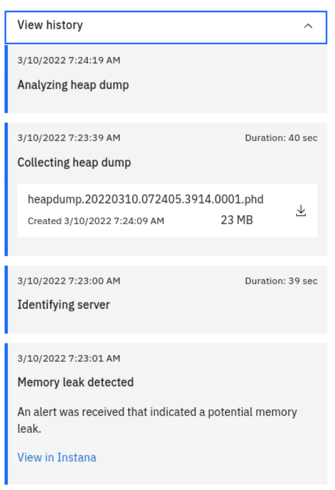
-
If you check your email, you should have received a WSA notification like the following for the issue.

-
After a few minutes, the WSA investigation is completed. You can see the analysis summary which points to the root cause of the issue.
You can also click Download all files to get the analysis reports, heap dumps and WSA runbooks on your workstation.
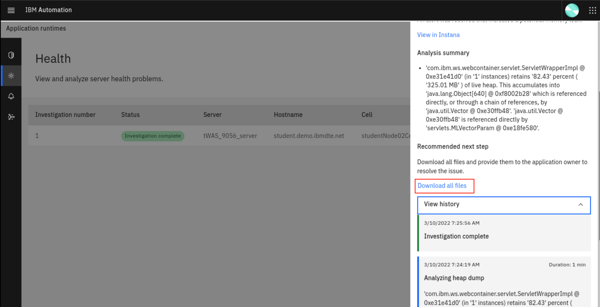

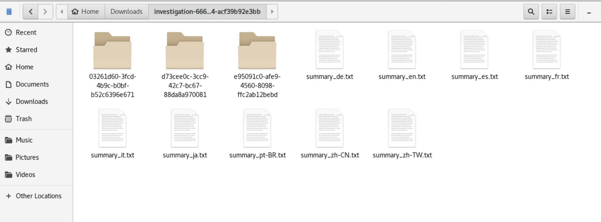

-
Now WSA has successfully detected and analyzed WAS memory leak issue, it has sent you another email to confirm that.

-
you can run a script to reduce the heap usage and then stop the WAS server with the commands:
/home/ibmuser/WAS-Automation-LabFiles/lab2-MemoryLeak/curl_MLApp_removeLast.sh /opt/IBM/WebSphere/AppServer9056/bin/stopServer.sh tWAS_9056_server
Part 6: Liberty memory leak check with WebSphere Automation
In this section, you are going to create a Liberty application memory leak event and use WSA to detect and analyze the problem.
-
Start the Liberty server with the command:
/opt/IBM/WebSphere/Liberty200012/bin/server start Liberty_200012_serverThe output is like this:
[ibmuser@student ~]$ /opt/IBM/WebSphere/Liberty200012/bin/server start Liberty_200012_server
Starting server Liberty_200012_server.
Server Liberty_200012_server started with process ID 8439.
-
Go back to Instana Infrastructure page, select Comparison Table > JVMs and click the Liberty_200012_server link.

You see the JVM dashboard displayed with No Issues status.

-
From the Terminal window, run the script to increase application heap usage which will create application memory leak event.
/home/ibmuser/WAS-Automation-LabFiles/lab2-MemoryLeak/curl_MLApp_add_liberty.shThe script output is showing like this:
[ibmuser@student ~]$ /home/ibmuser/WAS-Automation-LabFiles/lab2-MemoryLeak/curl_MLApp_add_liberty.sh
Increased heap usage by 25MB
Increased heap usage by 50MB
-
In the Instana page, you can see that one issue is detected.

-
In the WSA Health page, you see another investigation is started for the Liberty server memory leak issue.

After a few minutes, the investigation is completed.
Since you are using the same application in both WAS and Liberty, you should see the similar WSA Liberty memory leak analysis results as WAS.
Summary
Congratulations! You have completed the WebSphere Automation Memory Leak Detection lab.
With automated tooling and insights, IBM WebSphere Automation enables teams to modernize and secure IT estates, adapt and respond to incidents efficiently, and optimize WebSphere operations. WebSphere system operators and administrators can reduce the cost, effort, and risk of addressing vulnerabilities, automate critical activities, and preserve uptime with early detection, notification, and remediation of incidents.
IBM WebSphere Automation helps teams remove manual toil to work less on maintenance tasks and more on strategic activities, while unlocking new value, extending the life, and increasing ROI of WebSphere investments.
IBM WebSphere Automation is part of IBM Automation, a set of shared automation services that help you get insight into how your processes run, visualize hotspots and bottlenecks, and use financial impact information to prioritize which issues to address first.
To learn more about IBM WebSphere Automation, visit ibm.com/cloud/websphere-automation
Appendix 1: Reserve an environment for the lab
 |
IMPORTANT! Reserving an environment ONLY applies if you are performing this lab as self-paced outside of an instructor led virtual lab. A Skytap cloud lab environment is required for performing the lab. In self-paced mode, you are required to request an environment using the instructions provided below. Otherwise, in an instructor led lab, the lab instructor will provide access to pre-provisioned lab environment. |
-
Use the link below to access the WebSphere Foundation Bootcamp
https://techzone.ibm.com/my/reservations/create/60da2c20e2cb7a001f656575
a. Use your IBM ID to login to the IBM Technology Zone
b. The Create a reservation page is displayed

-
Select “Reserve for Now” Radio button, and then follow the on-screen dialog to reserve an environment in a Skytap data center in the closest Geography (US-Central, EMEA, Asia Pacific)
a. The environment name should be pre-filled with “WebSphere Automation Environment – Skytap”
b. Purpose: Practice / Self-Education
c. Description: Enter a description. The field is required.
d. End date and time: Use the calendar widget and select the maximum date available (2 weeks from date of reservation)
e. Select a time: Select a time of day for reservation to expire
f. Select a timezone nearest to you

-
Preferred Geography: Choose a Skytap datacenter in the closest geography (US, EMEA, Asia Pacific)
-
One complete, click on the “Submit” Button
-
The reservation takes a moment to be created. When it is created, click on the “My reservations” button to see the detail so of the environment reservation.
Note: The details of your environment reservation are displayed.
-
Take not of the Username and Password. Then click the
 icon to navigate to the Launch page.
icon to navigate to the Launch page. -
Click the “Open Your Skytap Environment” link.
-
Enter the Desktop Password for the VM access, that was generated for your environment. Click Submit button.

The lab environment
Eight Linux VM has been provided for this lab.

Note: The STUDENT VM is the VM you will login to and use in the lab.

- The login credentials for the STUDENT” image is:
User ID: ibmuser
Password: engageibm!